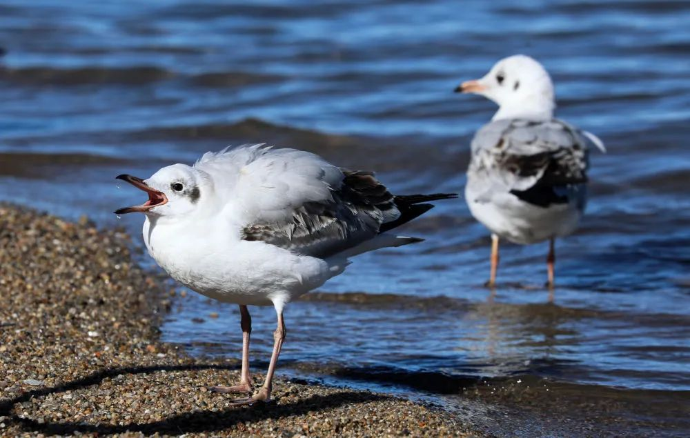

青海湖国家级自然保护区
Qinghai Lake National Nature Reserve
青海湖国家级自然保护区位于青藏高原东北部，其范围包括青海湖整个水域及鸟类繁殖、栖息的岛屿、滩涂和湖岸湿地，地跨二州三县。
保护区始建于1975年，是中国最早被列入《关于特别是作为水禽栖息地的国际重要湿地公约》（拉姆萨尔公约）国际重要湿地名录的保护区。2023年11月30日，国家林业和草原局公布《陆生野生动物重要栖息地名录（第一批）》，青海青海湖普氏原羚及候鸟重要栖息地入选。
青海湖保护区及周边地区有鸟类189种，分属14目37科，青海湖地区鸟类种类相对周边其它区域丰富，鸟类种数占青海省鸟类总数的55%，其中候鸟种数占63.6%。每年在青海湖迁徙停留的候鸟有数十万只，青海湖又是中国境内夏候鸟繁殖数量最多种群最为集中的繁殖地，每年在此集中繁殖的棕头鸥、鱼鸥、斑头雁、鸬鹚四种大型水鸟数量在5.8万只以上。青海湖还是水禽的重要越冬地，每年有近4500只左右的大天鹅在此越冬。国家一级保护动物黑颈鹤在保护区湿地草甸中繁殖，数量达50余只。
